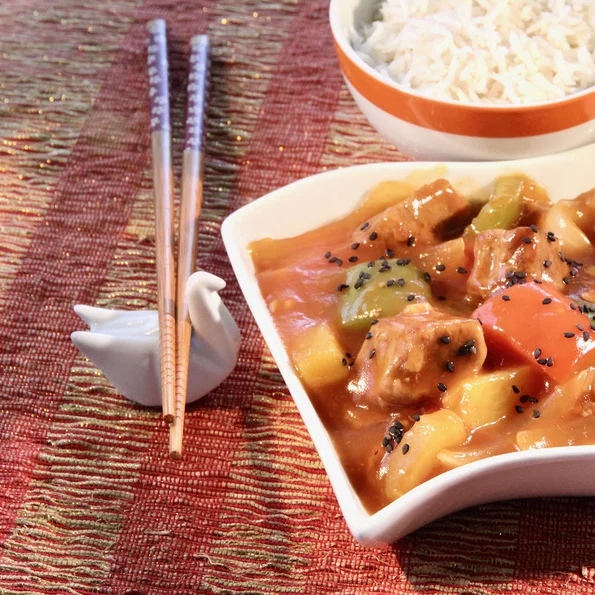

Instant Pot Sweet and Sour Pork

Dish Description
A traditional Chinese dish and a takeout staple. Skip the takeout and make easily and quickly at home
following this recipe!
Ingredients
- 1 tablespoon vegetable oil
- 1 pound boneless pork loin, cut into 3/4-inch cubes
- 1 1/4 cups water, divided
- 1/2 cup ketchup
- 1/3 cup rice vinegar
- 1/3 cup pineapple juice
- 2 tablespoons brown sugar
- 2 tablespoons soy sauce
- 2 teaspoons minced fresh ginger
- 1 teaspoon minced garlic
- Aluminium foil
- 1 onion, sliced vertically
- 1 cup chopped fresh pineapple
- 1 red bell pepper, cut into large chunks
- 1 green bell pepper, cut into large chunks
- 2 tablespoons cornstarch
- 1 tablespoon toasted sesame seeds(Optional)
Cooking Steps
- Turn on the Instant Pot and select Saute. Add oil and heat until hot. Add pork cubes,
working in batches if necessary, and cook until browned on all sides, about five minutes. Return
all the pork back to the pot and cancel Saute mode.
- Whisk together 3/4 cup water, ketchup, rice vinegar, pineapple juice, brown sugar, soy sauce,
ginger, and garlic in a small bowl. Pour over pork and stir to combine.
- Close and lock the lid. Select high pressure cook and set timer for 5 minutes.
- Release pressure using the natural release method. Release the remaining pressure using the
quick release method. Unlock the lid and remove. Transfer pork to a plate using a slotted spoon.
Cover with foil to keep warm.
- Select Saute mode and stir in onion, pineapple, and red and green bell peppers.
Simmer until vegetables start to soften, 6 to 7 minutes.
- Whisk together cornstarch and remaining 1/2 cup water in a small bowl until smooth.
Pour slurry into the pot. Cook, stirring constantly, until sauce has thickened to your preferred
consistency, about 2 minutes. Return cooked pork back to the pot and heat until just warmed through.
Optionally, garnish with toasted sesame seeds. Serve with rice on the side. Enjoy!
Home Page